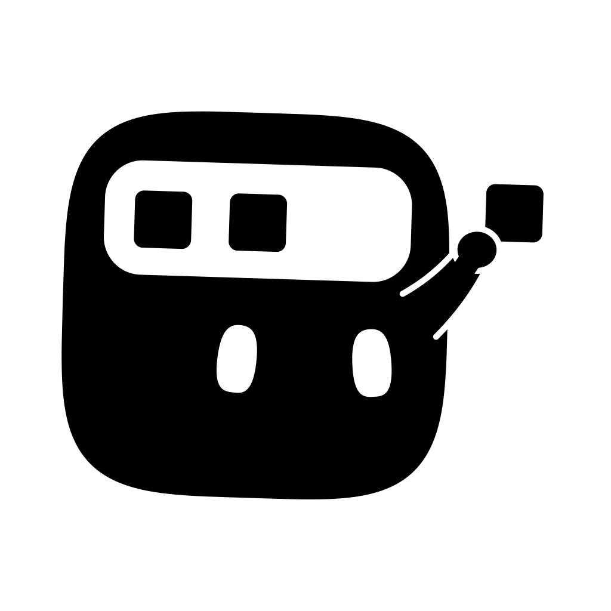

PI Lab, Tsinghua University
Oct 2025 – PresentHuman–AI collaborative writing, including how people negotiate AI participation and how shared task representations support sensemaking and coordination.
I'm an undergraduate at Tsinghua University, studying Computer Science and Technology with a dual degree in Economics and Finance.
I work with Prof. Chun Yu at PI Lab on human–AI collaboration, and with Prof. Yu Wang at NICS-EFC Lab on efficient agent systems. My current interests include how people coordinate with AI during writing, and how agents manage memory and context over long tasks.
I also explore machine learning for equity return prediction and financial market simulation.

arXiv preprint, 2026
Agents directly manage their KV caches, retaining useful computed states while controlling memory and inference costs.
Human–AI collaborative writing, including how people negotiate AI participation and how shared task representations support sensemaking and coordination.
Algorithm design for Cache Engineering for Agents, exploring how agents manage KV caches and improve cache policies for long-horizon execution.
A residual factor-token extension to StockMixer for cross-sectional equity return prediction, evaluated across data configurations and random seeds.
Diffusion-based market simulation across multiple assets, with experiments on parameter sharing, cross-asset coupling, and autoregressive rollout stability.
An A-share quality factor based on profitability, operating cash flow, and leverage, evaluated using IC/RankIC analysis and backtests with trading constraints.
B.Eng. in Computer Science and Technology
B.Econ. in Economics and Finance (dual degree)